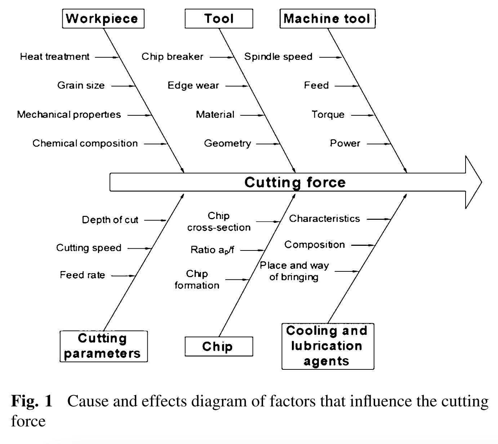
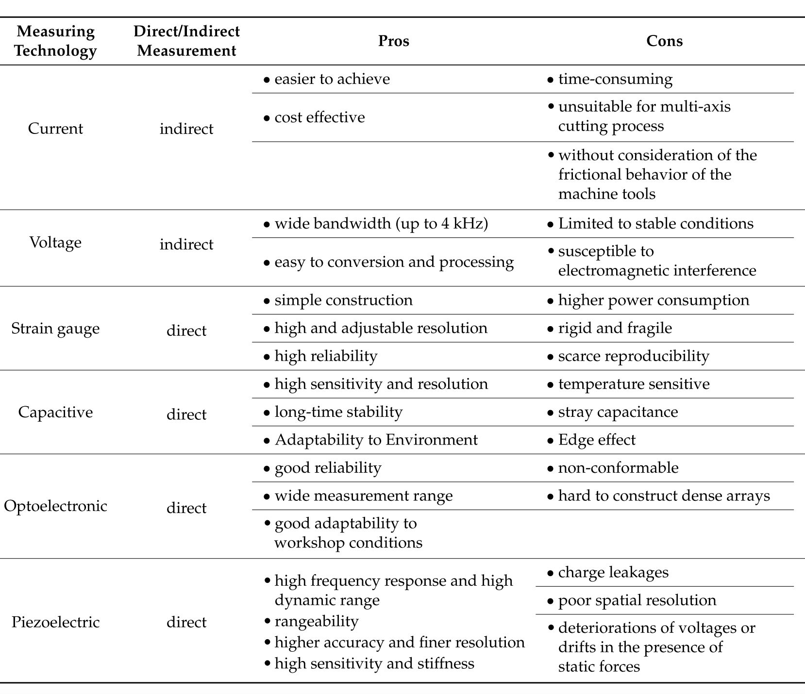
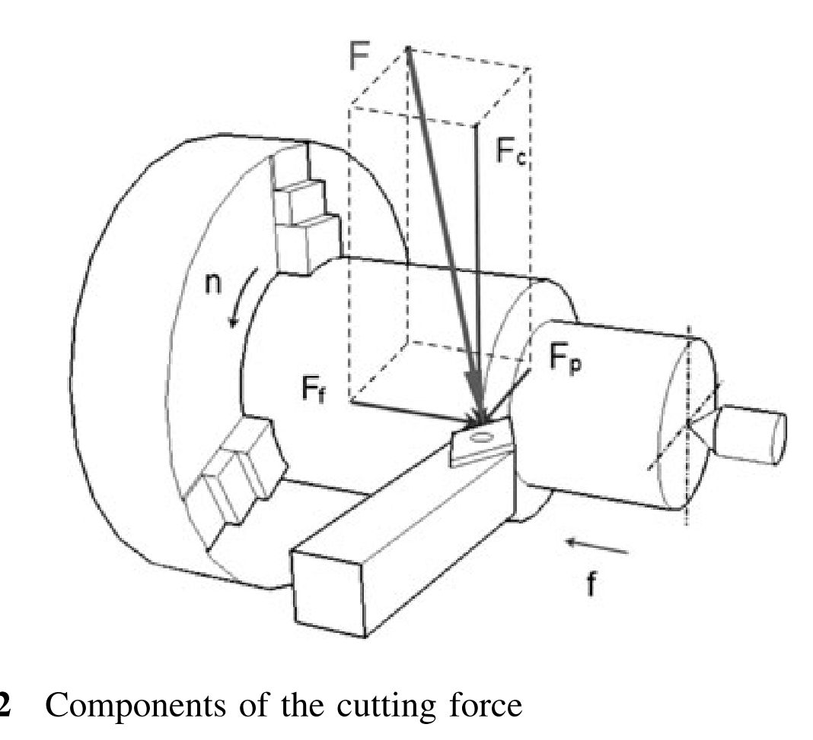
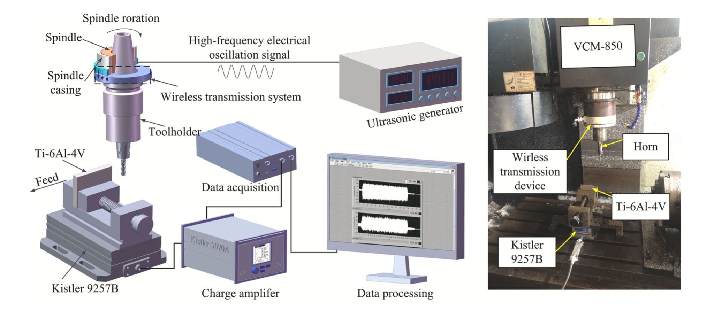
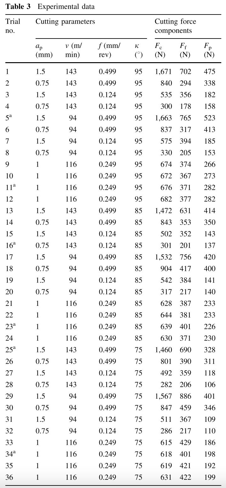
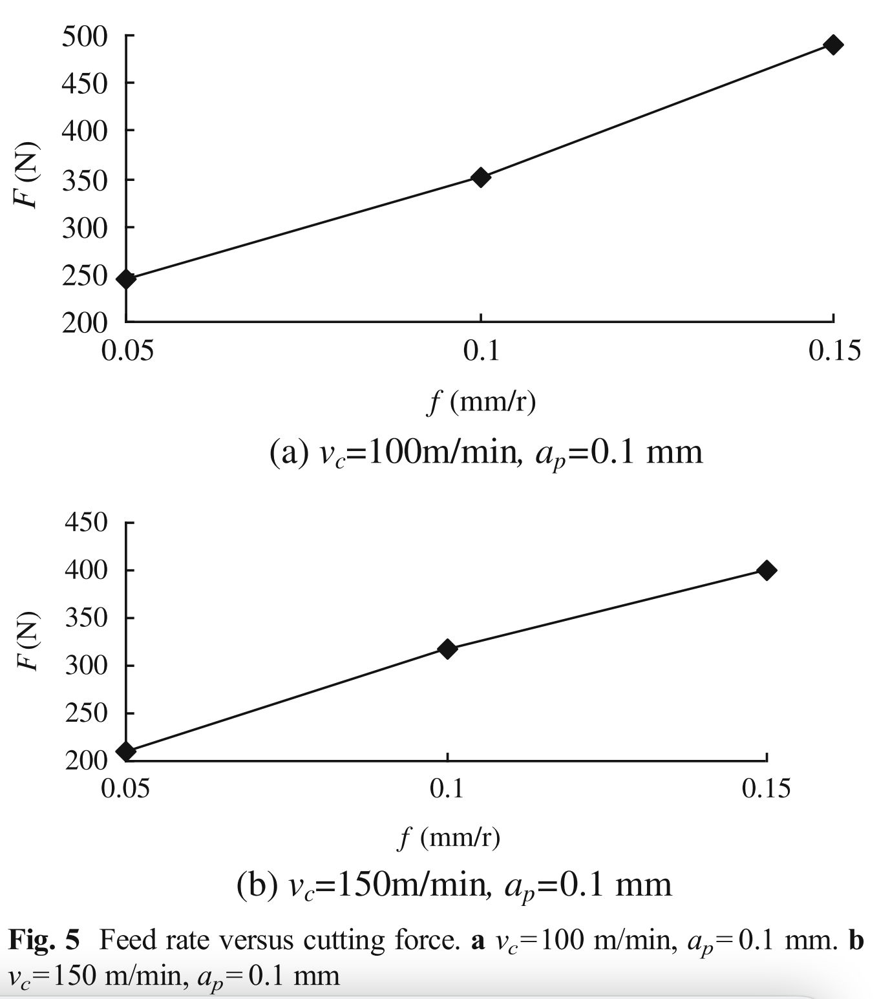
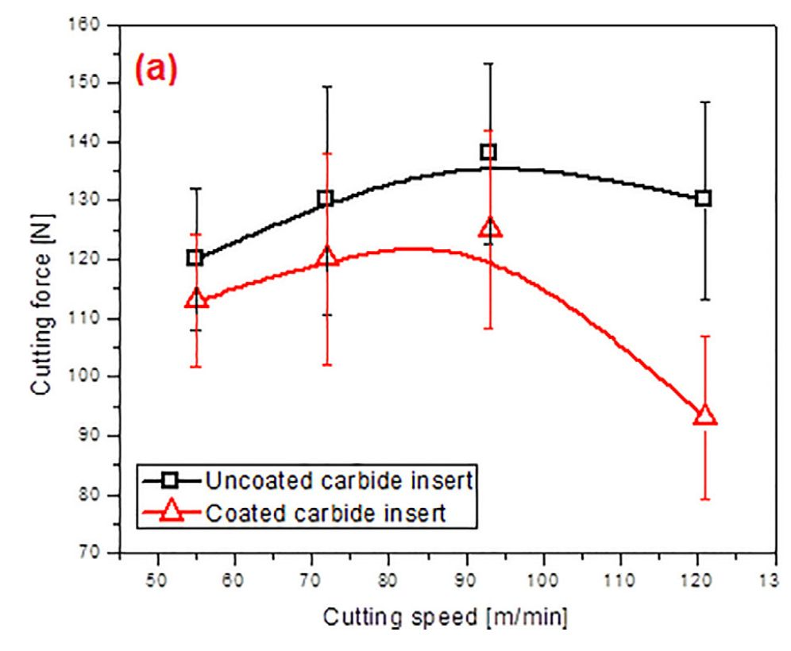
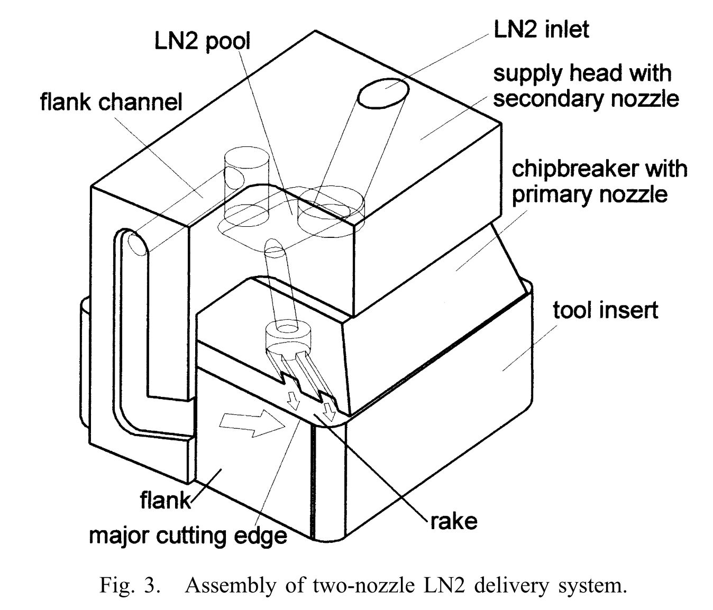
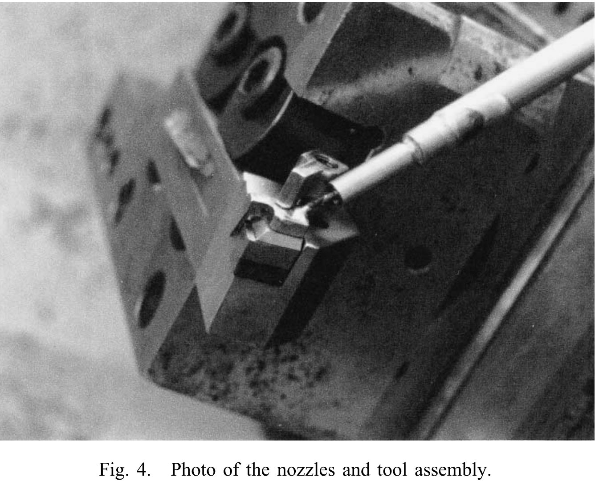
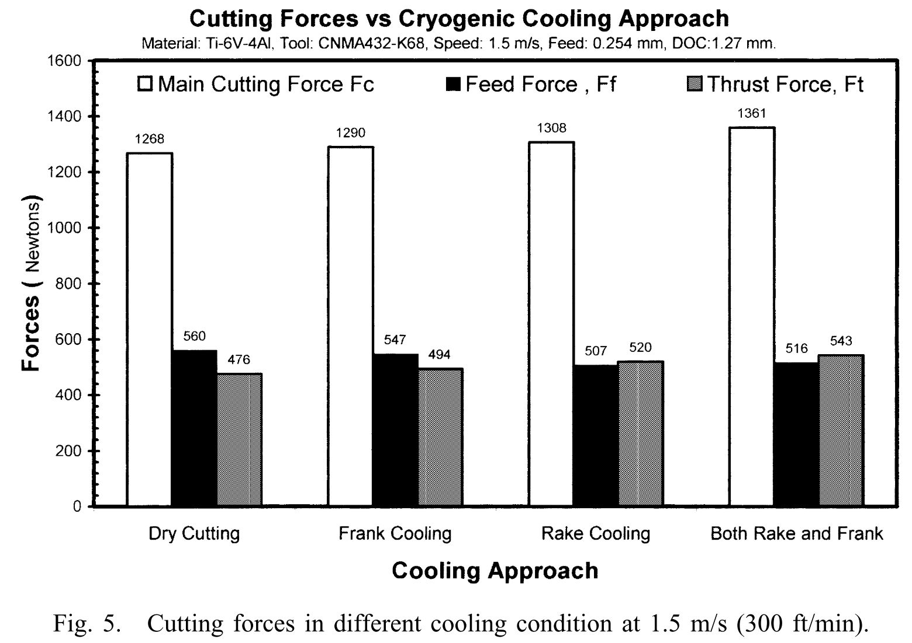

Cuttingforce
Force components · Kienzle model · dynamometry · speed, feed, coating and cryogenic effects
The workpiece resists the tool. That resistance, resolved along three axes, is what a dynamometer measures and what decides power, deflection, heat and tool life.
Where the force comes from, how we measure it, and what changes it.
Six groups of factors push on the cutting force. Click a group on the figure.
The cutting force occurs, during the cutting process, due to resistance of workpiece material.
Cutting force in turning is influenced by varying amounts of factors such as cutting parameters, tool related parameters, properties of workpiece material and environment parameters.
A great deal of research has been performed to quantify the effect of these parameters on cutting force. Figure 1 shows the influential factors on cutting force.

Six ways to turn force into a signal. Pick one and push the force.

One resultant force, three components. Click an arrow to see what it does.

Fc, main cutting force (tangential force), acting on the rake face of the tool in the direction of motion of the workpiece;
Ff, feed force (axial force), acting on the tool in the direction of tool movement;
Fp, passive force (radial force), acting on the tool in the radial direction, normal to the machined surface.
Force = specific cutting force × chip area. Thin chips cost more per mm².
kc = kc1.1 · h−mc
Fc = kc · b · h = kc1.1 · b · h1−mc
kc1.1 is the force for a chip 1 mm wide and 1 mm thick; mc (about 0.2–0.3) says how fast kc rises as the chip gets thinner.
The cutting force equals the specific cutting force times the chip cross-section, Fc = kc·A, with A = b·h.
Tseng et al. (2021)Measured with a dynamometer, the specific cutting force fell as feed per tooth increased.
Janota et al. (2019)From tool tip to graph in four steps. Click each block.
The cutting forces were measured with a three-component force dynamometer Kistler type 9441, mounted on the lathe via a custom designed adapter for the tool holder creating a very rigid tooling fixture.
The charge signal generated at the dynamometer was amplified using amplifier Kistler type 5007A.
The amplified signal was acquired and sampled using computer. Before conducting the measurements all the measuring instruments were calibrated.
Pick a range that fills the ±10 V output without clipping the peaks.

Plot the measured forces, then fit a power law to find which input matters most.

In milling the chip thickness changes every degree, so the force does too.
Slot milling, one tooth in cut, steel with kc1.1 = 1700 N/mm², mc = 0.25, FcN = 0.4 Fc. Illustrative values; axis signs follow one common convention.
A force signal is never a flat line. Decide what number you will report.
Synthetic practice signal. Mean for force models; peak for tool and fixture design.
Heat softens the work material, so force falls with speed, until the benefit runs out.
Figure 4 shows the variation of cutting force with cutting speed. The cutting force decreases when increasing cutting speed from 100 to 200 m/min, as the cutting temperature increases with cutting speed and high cutting temperature has a softening effect to the workpiece material.
However, the cutting force increases when increasing cutting speed from 200 to 300 m/min, as the cutting temperature gradually increases and is close to the melting point of the workpiece material, then effects of the cutting temperature on the cutting force is weakened. It is well known a large number of heat is generated in hard turning.
The heat resistance of PCBN tool can be 1,000–1,500 °C, and PCBN has a high hardness in high temperature. It is beneficial to take advantage of the hardness difference between PCBN and GCr15 steel to improve cutting efficiency and tool life.
Cutting speed has a critical value for force; in hard turning of GCr15 with PCBN the radial force can exceed the main cutting force.
Li et al. (2018)Forces fell as speed rose, but above 250 m/min flank wear grew and raised the thrust and feed forces.
Chen et al. (2018)Feed has a greater influence than speed: doubling it gives about 1.5 × the force.

Figure 5 shows the variation of cutting force with feed rate.
It is seen that the cutting forces increase with increasing feed rate. Compared with Fig. 4, feed rate has a greater influence on the cutting force than cutting speed.
This can be explained by increasing chip cross section with increasing feed rate. With the increasing of feed rate, the material removal rate and plastic deformation rate are increased, resulting in an increasing of the cutting force.
PCBN tools are generally used for finish machining, and axial depth of cut is usually small. Therefore, a relative large feed rate is recommended to produce a metal-softening effect.
It should be noted that feed rate has a greater influence on cutting force than cutting speed. Doubling the feed rate results in about 1.5 times of the cutting force and makes the actual chip twice as thick thus making it much more difficult to curl and bend.
Why 1.5 and not 2?
Lower friction on the rake face means a lower cutting force.

Friction → force (Merchant)
φ = 45° + α/2 − β/2, β = tan⁻¹μ, Fc ∝ cos(β−α) / [sin φ · cos(φ+β−α)]. An idealised orthogonal model.
Where the liquid nitrogen goes decides which force goes down.


The more liquid nitrogen is used the lower the cutting temperature. As our material study on cryogenic machining shows, when the temperature is lower the workpiece material becomes stronger and harder [12], and in turn, the cutting forces increase.
Cooling raised the cutting force slightly but cut the feed force.

Cooling reduced tool–workpiece friction, but the cutting force increased because of the higher shear resistance of the colder material.
Kummamkandath et al. (2019)It is interesting to note that in cryogenic machining the feed force, which is closely related to the frictional force of the chip acting on the tool, decreased.
The lowest feed force is for cooling the rake using only the primary nozzle. At lower temperatures, the material became harder and less sticky, and the friction force smaller, especially cooling the rake by releasing LN2 to the chip and tool interface area. Under these conditions, LN2 may form a gas and liquid cushion enhancing its lubrication effect.
The feed force reduction indicated that in the direction of chip flow the friction force reduction was more than the cutting force increase. When both nozzles were on, it has the benefit of the lubrication cushion effect, therefore it has lower feed force than flank cooling.
However, the two-nozzle mode had higher feed force than the primary nozzle mode, because of higher cutting force resulting from lower material temperature, which increased the material strength.
Lower temperature can reduce forces by limiting adhesion, yet the strongest cooling gave relatively high passive forces.
Stampfer et al. (2020)In fibre composites the force depends on the angle at which the edge meets the fibres.
Read from the original figures: forces are lowest near θ ≈ 45° and rise to a maximum at larger fibre cutting angles, where fibres are bent before they break.
Watch a dynamometer at work, then look for Fc, Ff and Fp.
- Where is the dynamometer mounted, and how is the tool clamped to it?
- Which force is largest on the screen? Does that match slide 5?
- What happens to the signal when the tool enters and leaves the cut?
Six questions. Pick an answer to see the reasoning.
References
- Chen, Z., Peng, R. L., Zhou, J., et al. (2018). Effect of machining parameters on cutting force and surface integrity when high-speed turning AD 730™ with PCBN tools. International Journal of Advanced Manufacturing Technology, 100, 2601–2615. doi:10.1007/s00170-018-2792-1
- Hamadi, B., Yallese, M. A., Boulanouar, L., et al. (2022). A comparative study of the performance of uncoated, PVD, CVD and MTCVD coated carbide inserts in dry turning of AISI 4140 steel. Periodica Polytechnica Mechanical Engineering, 66(4), 314–324. doi:10.3311/ppme.18591
- Janota, M., Kolář, P., Sulitka, M., et al. (2019). Operational method for identification of specific cutting force during milling. MM Science Journal, 3250–3257. doi:10.17973/mmsj.2019_11_2019078
- Kummamkandath, A., Duchosal, A., Morandeau, A., et al. (2019). Influence of both rake and flank faces metal working fluid strategies on machinability of Ti-6Al-4V alloy. MM Science Journal, 3114–3121. doi:10.17973/mmsj.2019_11_2019059
- Li, Q., Jiao, Y., Hu, K., et al. (2018). Research on PCBN tool dry cutting GCr15. Machines, 6(3), 28. doi:10.3390/machines6030028
- Seid Ahmed, Y., DePaiva, J. M., Covelli, D., et al. (2017). Investigation of coated cutting tool performance during machining of super duplex stainless steels through 3D wear evaluations. Coatings, 7(8), 127. doi:10.3390/coatings7080127
- Stampfer, B., Golda, P., Schießl, R., et al. (2020). Cryogenic orthogonal turning of Ti-6Al-4V. International Journal of Advanced Manufacturing Technology, 111, 359–369. doi:10.1007/s00170-020-06105-z
- Tseng, L.-W., Hu, T.-S., Hu, Y.-C. (2021). A smart tool holder calibrated by machine learning for measuring cutting force in fine turning and its application to the specific cutting force of low carbon steel S15C. Machines, 9(9), 190. doi:10.3390/machines9090190
- Figures, Table 3 and the quoted passages are reproduced from the original lecture slides, with their original figure numbers and in-text citations ([12], [13], [26]). Figure images are shown unaltered. Kienzle material values, sensor sensitivity and the milling force ratio are typical illustrative values.